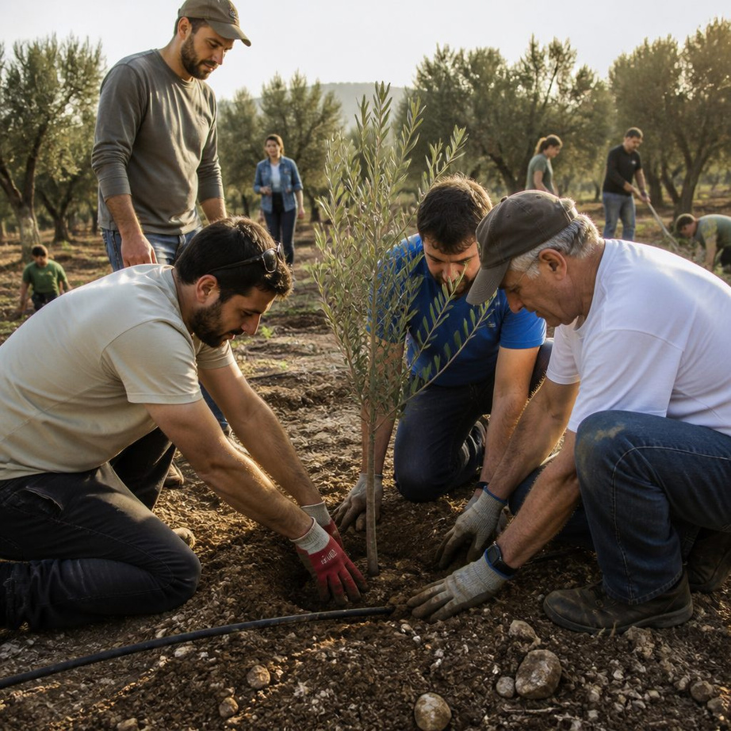

זכרון בונה חיים
גשר בין ההנצחה בישראל לקהילות יהודיות בעולם — שידוך, ליווי, וצמיחה משותפת מתוך הכאב.
למענם · למעננו
מאז השביעי באוקטובר
נתוני השכול במלחמת התקומה
מלחמת חרבות ברזל הותירה שכול עמוק — ועמה, אלפי סיפורים של גבורה, אהבה ובחירה לצמוח.
זירות לחימה, בעזרת מאות אלפי לוחמי מילואים
חיילי וחיילות צה"ל נפלו במערכה למען קיום המדינה
ישראלים נפלו במהלך מלחמת חרבות ברזל
בישראל
מתוך השבר, הבחירה לצמוח
משפחות שכולות רבות בחרו לזכור וליצור חיים חדשים. הן הקימו עשרות מיזמים של זיכרון חי — כל אחד הופך את ישראל למקום טוב יותר.

מי אנחנו
הגשר בין הזיכרון לקהילות
מיזם "בשבילנו" נוצר כדי לבנות את הגשר בין מיזמי ההנצחה בישראל לקהילות היהודיות בעולם.
מה אנחנו
גוף מקשר ומלווה
מתאימים בין מיזם הנצחה לקהילה, ומלווים את הקשר מהמפגש הראשון ועד לשותפות מבוססת.
איך
שידוך · ליווי · סבסוד
חיבור מדויק, חומרים חינוכיים, וסבסוד המפגש — כדי שהשותפות תתחיל ותימשך.
למה זה חשוב
חוסן יהודי משותף
מחזקים את הזהות והחוסן של הקהילות, ובונים גשרים חזקים יותר בין יהודי העולם וישראל.
בחרו את הדרך שלכם
לאיזה מסלול אתם שייכים?
לכל קהל יש שביל משלו — בחרו ואנחנו נוביל אתכם.
בתי ספר, בתי כנסת, פדרציות וארגונים יהודיים שרוצים להצטרף לשביל ולאמץ מיזם הנצחה.
משפחות שכולות ומיזמי הנצחה שרוצים להרחיב את מעגל הזיכרון ולהתחבר לקהילות בעולם.
יחידים וגופים שרוצים לתמוך ולהרחיב את המיזם לקהילות רבות יותר ברחבי העולם.
אל תקרי בנייך אלא בונייך
נושיט יד, נצטרף ונרחיב את מעגל העשייה
עבורם ובשבילנו — כי הזיכרון הוא הגשר.